Click on an image to show a larger version of it:
| » Windows « | ||
| Picker panel, 2000: | Main panel, XP: | |
| 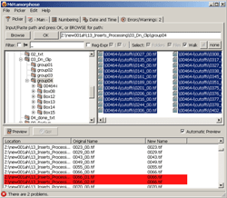 | 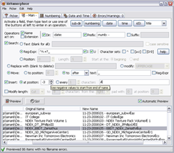 | |
| Numbering panel, XP: | Preferences, XP (French) | |
| 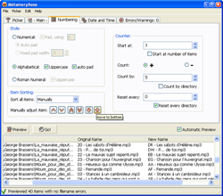 | 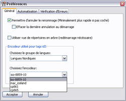 | |
| » Linux « | ||
| Error panel, KDE (Spanish): | Date & Time panel, Gnome: | |
| 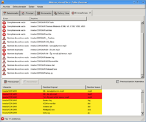 | 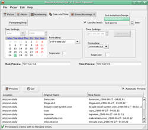 | |
| Picker panel & preferences, Gnome (Japanese): |
Main Panel on Gnome (French): | |
| 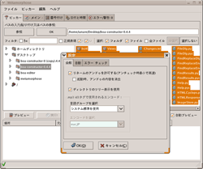 | 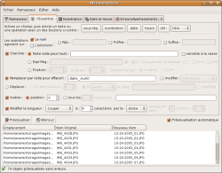 | |
| » OS X « | |||
| Main panel (French): | Date and Time panel: | ||
| 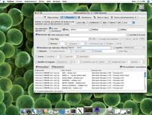 | 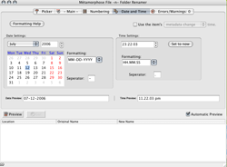 | ||
| Numbering Panel: | Error Panel (Japanese): | ||
| 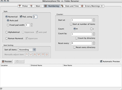 | 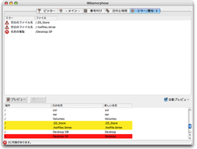 | ||
| » Other « | ||
| FreeBSD, Window Maker: | ||
| 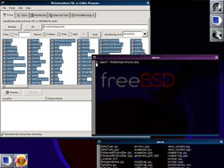 |